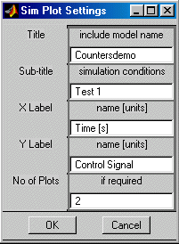

| User Function Reference |
|
Generate a scrolled input dialog.
Syntax
Result = inputdlg2(Prompt) Result = inputdlg2(Prompt, Title) Result = inputdlg2(Prompt, Title, Mode) Result = inputdlg2(Prompt, Title, Mode, Default)
Description
inputdlg2 displays a matrix of input boxes with prompts in a resizable
scrolled figure window. The calling process is stopped to await the
user entry. The inputs made by the user are returned as Result:
an m-by-n cell array of strings if Mode was 0,
an m-by-n matrix if Mode was 1,
an m-by-n cell array if Mode was mixed.
Result is empty if no entry is made, or the dialog is cancelled
or closed.
Result = inputdlg2(Prompt) returns string matrix of data input.
Prompt is a cell array of prompts, one per entry, containing:
a string cell vector of m row titles (optional)
a string cell vector of n column titles (optional)
a string cell array of m-by-n input item prompts (optional)
or just an array of m-by-n prompts
(either row & col titles or prompts must be provided).
Result = inputdlg2(Prompt, Title)
Title is a string title displayed in the window title bar.
Result = inputdlg2(Prompt, Title, Mode) where:
Mode is two cells:
Mode{1} is interpretation mode - 0 for char (default) or 1 for numeric
if scalar, it applies to whole (Mode=1 makes all inputs numeric)
if vector, it applies for each row/column (ones(1,1:3) => cols 1:3 numeric)
if matrix m-by-n, it identifies inputs which are numeric.
Mode{2} sets one or more lines for each input - 1 for single (default), 2 for many.
Result = inputdlg2(Prompt, Title, Mode, Default) where:
Default is an m-by-n matrix to the initial values
or a single value to apply to all (accepts number, string or cell).
Examples
Example 1. Get simulation inputs.
cond={'Altitude';'Mach Number';'Delta Temp from ISA'};
user_in=inputdlg2(cond,'Sim i/p Values',1,[0;0;0]);
user_in
Example 2. Simulation results dialog.
lab={'Title';'Sub-title';'X Label';'Y Label';'No of Plots'}; prm={'include model name';'simulation conditions'}; prm=[prm;{'name [units]';'name [units]';'if required'}]; user_in=inputdlg2({lab,{''},prm},'Sim Plot Settings',[0;0;0;0;1]); user_in
See Also
inputdlg,
menu,
selectdlg3,
listdlg,
listdlg2
|
|
listdlg2 | GUI Functions |
|